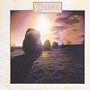

Celtic Lyrics Corner > Artists & Groups > Clannad > Magical Ring > Thiós Fá'n Chósta
|  | Thiós Fá'n Chósta |
| Credits : | Pól Ó'Bhraonáin, Ciarán Ó'Bhraonáin & Pól Ó'Dúgaín |
| Appears On : | Magical Ring ; Live In Concert |
| Language : | Gaeilge (Irish Gaelic) |
| Lyrics : | English Translation : |
| Ag taisteal dom síos fá'n chósta | Travelling down by the coast |
| Na réalta ag dealramh sa spéir | The stars shimmering in the sky |
| Ag meabhrú ar laetha mo hóige | Looking back at my days of youth |
| 'S an áit úd ar chaith mé mo shaol | And the place in which I spent my life |
| Tá aill álainn deas ar a' taobh seo | There's a beautiful cliff on this side |
| Ag bualadh 's'briseadh'g 'na toinn | That was hit and broken by the waves |
| Na daoine tá cóir agus crualach | The people that are odd and cruel |
| Ag truaileadh an domhan seo gach óich' | Polluting this world every night |
| Chonaic mé í mar long mór | I saw her, like a great ship |
| Is fuair mise stráin is is caoin | I felt in me strain and it's sad |
| Má scriostar arís 'measc mo cheartlár | If this place is destroyed again in front of my people |
| An lá úd nar bheith mise sa shaol | It'll be the day when I am in this life |